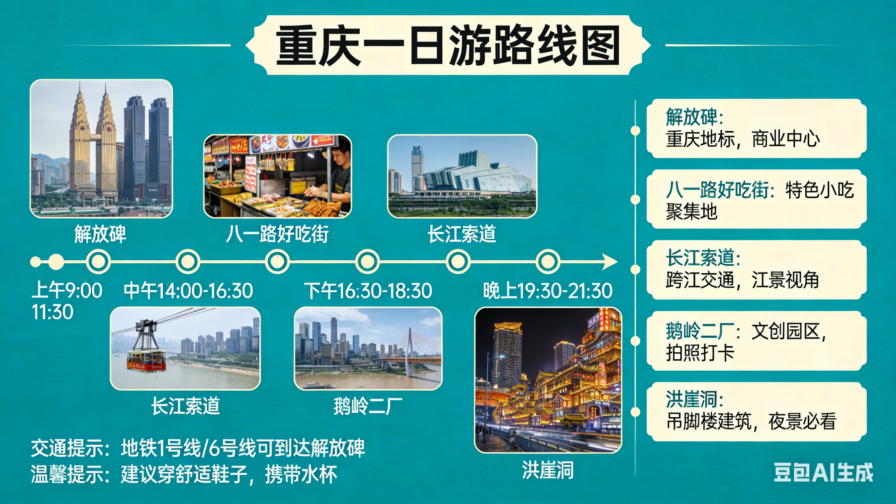

山城夜景 · 蜀道雄关 · 道教名山 · 美食灯会 · 三江汇流
北京→重庆（2.16-2.17）→剑阁（2.18-2.19）→青城山/都江堰（2.20-2.21）→乐山（2.22）→自贡（2.23）→宜宾（2.24）→成都/宜宾飞北京（2.25）
共10天9晚（含往返交通）
✈️ 交通：2.16 北京→重庆江北（CZ2004，21:00抵达）
🏨 住宿：美居酒店（解放碑店，已确认）
| 时间 | 路线&安排 | 亮点&贴士 |
|---|---|---|
| 09:00-10:00 | 酒店→解放碑步行街 | 打卡地标，八一好吃街早餐（山城小汤圆、陈麻花） |
| 10:00-12:00 | 步行15分钟→山城巷传统风貌区 | 悬空栈道、仁爱堂旧址，穿舒适鞋（爬坡多） |
| 12:00-13:30 | 午餐→曾老幺鱼庄（长滨路店） | 邮亭鲫鱼（人均60元，提前订位） |
| 13:30-15:00 | 朝天门→长江索道（单程20元） | 空中俯瞰两江交汇，戴围巾手套防江风 |
| 15:00-16:30 | 上新街站→钟书阁（重庆店） | 镜面设计拍“盗梦空间”感照片（16:30前光线好） |
| 16:30-18:00 | 轻轨2号线→李子坝轻轨穿楼观景台 | 拍“轨道穿楼+远山”全景（傍晚人少） |
| 18:00-19:30 | 步行→三层马路老街区→晚餐【李子坝梁山鸡】 | 芋儿鸡（人均70元，靠窗看江景） |
| 19:30-21:00 | 步行→洪崖洞夜景→千厮门大桥全景 | 亮灯19:30-22:30，11楼往下逛，买陈建平麻花伴手礼 |

🚄 交通：2.18 重庆西→成都东（高铁G8614次，10:33-11:47，13车06C，13车06D约1小时）
🏨 住宿：都江堰市区（推荐“都江堰岷江新濠酒店”，近离堆公园）或青城山脚下（推荐“青城山六善酒店”，高端可选）
| 日期 | 安排 | 可调整点 |
|---|---|---|
| 2.18 | 下午游青城前山（道教发源地，看建福宫、上清宫、老君阁，缆车上山步行下山）→中午山脚下吃道家素斋→下午游【都江堰景区】（从秦堰楼进，看鱼嘴、飞沙堰、宝瓶口，傍晚南桥看蓝眼泪）。 | 体力好可加“青城后山”（更幽静，瀑布多，需3-4小时）；都江堰可替换为“熊猫谷”（看小熊猫，需预约 |
| 2.19 | 上午熊猫逛文庙街、西街（吃尤兔头、赵卖面甜水面）→下午返程乐山（高铁都江堰→乐山站，约1小时）或继续前往乐山。 | 若喜欢安静，可改游【青城外山】（普照寺，小众禅意） |
🚄 交通：成都东→乐山（高铁G1591次，18.02）
🚄 交通：乐山→自贡（待添加）
🏨 住宿：尚未选择
| 城市 | 日期 | 安排 | 美食 |
|---|---|---|---|
| 乐山 | 2.22 | 上午【乐山大佛】（选“船游”看全景，或步行下九曲栈道近距离看佛头）→下午【峨眉山金顶】（若时间够，高铁乐山→峨眉山15分钟，看云海，冬季可能无雪但有日出）→夜宿乐山。 | 张公桥美食街：纪六孃甜皮鸭、九九豆腐脑、芳芳跷脚牛肉。 |
| 自贡 | 2.23 | 上午【自贡恐龙博物馆】（世界三大恐龙遗址之一，看化石骨架）→下午【自贡盐业历史博物馆】（西秦会馆，看古代制盐工艺）→晚上【自贡灯会】（2月正值灯会期，中华彩灯大世界，必看！）→夜宿自贡。 | 汇东大酒店旁：长生面、谢凉粉、火边子牛肉。 |
| 宜宾 | 2.24 | 上午【蜀南竹海】（距市区1小时车程，冬季竹海人少，看翡翠长廊、观海楼）→下午【李庄古镇】（抗战文化名镇，吃李庄白肉）→傍晚【合江门广场】看三江汇流（长江+金沙江+岷江）→夜宿宜宾。 | 冠英街：宜宾燃面、双河凉糕、筠连水粉。 |
🚄 交通：自贡->天府机场T2 （C6116 9.10）
🚄 交通：成都天府T2->北京首都T2 （川航3U6873）